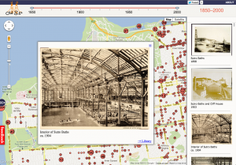

02.09.13
Posted in programming, web at 11:11 pm by danvk
Over the past month, I’ve been working with imagery from the NYPL’s Milstein Collection. Astute readers may have some guesses why. The images look something like this one:

There are two photos in this picture! They’re on cards set against a brown background. Other pictures in the Milstein gallery have one or three photos, with or without a white border:


To make something akin to OldSF, I’d need to write a program to find and extract each of the photos embedded in these pictures. It’s incredibly easy for our eyes to pick out the embedded photos, but this is deceptive. We’re really good at this sort of thing! Teaching a computer to do makes you realize how non-trivial the problem is.
I started by converting the images to grayscale and running edge detection:

The white lines indicate places where there was an “edge” in the original image. It’s an impressive effect—almost like you hired someone to sketch the image. The details on the stoops are particularly cool:

The interesting bit for us isn’t the lines inside the photo so much as the white box around it. Running an edge detection algorithm brings it into stark relief. There are a number of image processing algorithms to detect lines, for example the Hough Transform or scipy’s probabilistic_hough. I’ve never been able to get these to work, however, and this ultimately proved to be a dead end.
A simple algorithm often works much better than high-powered computer vision algorithms like edge detection and the Hough Transform. In this case, I realized that there was, in fact, a much simpler way to do things.
The images are always on brown paper. So why not find the brown paper and call everything else the photos? To do this, I found the median color in each image, blurred it and called everything within an RMSE of 20 “brown”. I colored the brown pixels black and the non-brown pixels white. This left me with an image like this:

Now this is progress! The rectangles stand out clearly. Now it’s a matter of teaching the computer to find them.
To do this, I used the following algorithm:
- Pick a random white pixel, (x, y) (statistically, this is likely to be in a photo)
- Call this a 1×1 rectangle.
- Extend the rectangle out in all directions, so long as you keep adding new white pixels.
- If this rectangle is larger than 100×100, record it as a photo.
- Color the rectangle black.
- If <90% of the image is black, go back to step 1.
Eventually this should find all the photos. Here are the results on the original photo from the top of the post:

The red rectangles are those found by the algorithm. This has a few nice properties:
- It naturally generalizes to images with 1, 2, 3, 4, etc. photos.
- It still works well when the photos are slightly rotated.
- It works for any background color (lighting conditions vary for each image).
There’s still some tweaking to do, but I’m really happy with how this algorithm has performed! You can find the source code here.
Permalink
01.21.13
Posted in programming, san francisco, web at 7:21 pm by danvk
If you head over to oldsf.org, you’ll find a sleek new UI and a brand new slideshow feature. Here’s the before/after:
 
Locations like the Sutro Baths can have hundreds of photos. The slideshow lets you flip through them quickly.
As so often happens, what looked simple at first became more and more complex as I implemented it. Here’s how that process went for the OldSF update.
Read the rest of this entry »
Permalink
06.25.12
Posted in programming at 2:35 pm by danvk
While working on Puzzle+, my crossword application for Google+ Hangouts, I couldn’t help but notice what a colossal pain it was to develop against the Hangouts API. It has a few things going against it:
- Testing your changes requires pushing them to a remote HTTPS server.
- Your application is buried in a ton of
iframes, which makes the JS console harder to use.
- Opening up Google+ Hangouts runs a browser plugin, turns on your camera, and makes your computer nice and toasty-hot.
- It’s impossible to test multiplayer scenarios without multiple Google+ accounts and multiple computers (since opening a hangout requires exclusive access to your camera).
To make myself less sad, I developed a small node.js server which emulates the Google+ Hangouts API. This lets you do all your development (both single- and multi-player) locally, without any of the AV overhead that Hangouts usually bring in.
In case anyone else finds themselves in a similar predicament, I’ve released this code as Lonely Hangouts on github.
Permalink
05.17.12
Posted in programming, web at 8:48 am by danvk
To solve a crossword with your friends in Google+, click this giant hangout button:

You’ll see something like this:
Click “Hang out” to invite everyone in your circles to help you with the puzzle. If you want to collaborate with just one or two people, click the “x” on “Your Circles” and then click your friend’s names on the right.
You’ll be prompted to either upload a .puz file or play one of the built-in Onion puzzles. You can get a free puzzle from the New York Times by clicking “Play in Across Lite” on this page.
With the puzzle downloaded, drag it into the drop area:

And now you’re off to the races! The big win of doing this in a Google+ hangout is that you get to video chat with your collaborators while you’re solving the puzzle, just like you would in person!
Astute readers will note that puzzle+ is a revival of lmnopuz for Google Shared Spaces, which was a revival of lmnowave (Crosswords for Google Wave), which was in turn a revival of Evan Martin and Dan Erat‘s standalone lmnopuz. Hopefully the Google+ Hangouts API will be more long-lived than its predecessors.
Permalink
05.14.12
Posted in programming, web at 10:04 am by danvk
I recently wanted to center some content both vertically and horizontally on a web page. I did not know in advance how large the content was, and I wanted it to work for any size browser window.
These two articles have everything you need to know about horizontal centering and vertical centering.
The two articles don’t actually combine the techniques, so I’ll do that here.
In the bad old days before CSS, you might accomplish this with tables:
<table width=100% height=100%>
<tr>
<td valign=middle align=center>
Content goes here
</td>
</tr>
</table>
Simple enough! In the wonderful world of HTML5, you do the same thing by turning divs into tables using CSS. You need no fewer than three divs to pull this off:
<div class="container">
<div class="middle">
<div class="inner">
Content goes here
</div>
</div>
</div>
And here’s the CSS:
.container {
display: table;
width: 100%;
height: 100%;
}
.middle {
display: table-cell;
vertical-align: middle;
}
.inner {
display: table;
margin: 0 auto;
}
A few comments on why this works:
- You can only apply
vertical-align: middle to an element with display: table-cell. (Hence .middle)
- You can only apply
display: table-cell to an element inside of another element with display: table. (Hence .container)
- Elements with
display: block have 100% width by default. Setting display: table has the side effect of shrinking the div to fit its content, while still keeping it a block-level element. This, in turn, enables the margin: 0 auto trick. (Hence .inner)
I believe all three of these divs are genuinely necessary. For the common case that you want to center elements on the entire screen, you can make .container the body tag to get rid of one div.
In the future, this will get slightly easier with display: flexbox, a box model which makes infinitely more sense for layout than the existing CSS model. You can read about how do to horizontal and vertical centering using flexbox here.
Permalink
« Previous entries
Next Page »

{kind=link}